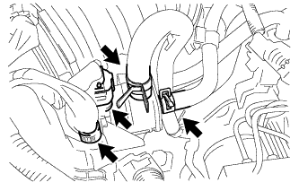
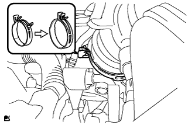
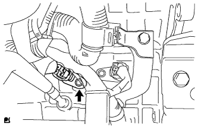
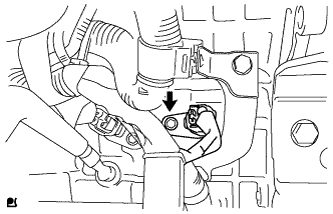
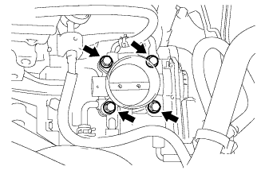

Transmission Revolution Sensor Removal |
| 1. Disconnect Battery Negative Terminal |
| 2. Remove Radiator Upper Air Deflector |
Remove the 8 clips and the radiator upper air deflector.
| 3. Remove Battery |
 |
Loosen the nut and disconnect the battery positive terminal. (*1)
Remove the bolt and nut, and remove the battery clamp.
Remove the insulator.
Remove the battery.
| 4. Remove Air Cleaner Cap w/ Air Cleaner Hose |
Disconnect the ventilation hose.
 |
Disconnect the vacuum switching valve connector and clamp, and disconnect the wire harness.
Disconnect the fuel vapor feed hose and fuel vapor feed hose No.2.
 |
Disconnect the intake air flow meter connector and clamp, and disconnect the wire harness from the air cleaner cap.
 |
Lock air cleaner hose clamp No.1.
With the clamp locked, remove the air cleaner cap w/ air cleaner hose.
| 5. Remove Air Cleaner Case |
Remove the air cleaner filter element.
 |
Remove the 3 bolts and clamp, and remove the air cleaner case.
| 6. Remove Transmission Revolution Sensor (Sensor NT) |
 |
Disconnect the transmission revolution sensor connector (NT).
Remove the bolt and remove the transmission revolution sensor from the continuously variable transaxle assembly.
Remove the O-ring from the transmission revolution sensor (NT).
| 7. Remove Transmission Revolution Sensor (Sensor NIN) |
 |
Disconnect the transmission revolution sensor connector (NIN).
Remove the bolt and remove the transmission revolution sensor from the continuously variable transaxle assembly.
Remove the O-ring from the transmission revolution sensor (NIN).
| 8. Disconnect Throttle Body Assembly |
 |
Disconnect the throttle body connector.
 |
Remove the 4 bolts and disconnect the throttle body assembly.
 |
Remove the gasket from the intake manifold.
| 9. Remove Transmission Revolution Sensor (Sensor NOUT) |
 |
Disconnect the transmission revolution sensor connector (NOUT).
Remove the bolt and remove the transmission revolution sensor from the continuously variable transaxle assembly.
Remove the O-ring from the transmission revolution sensor (NOUT).